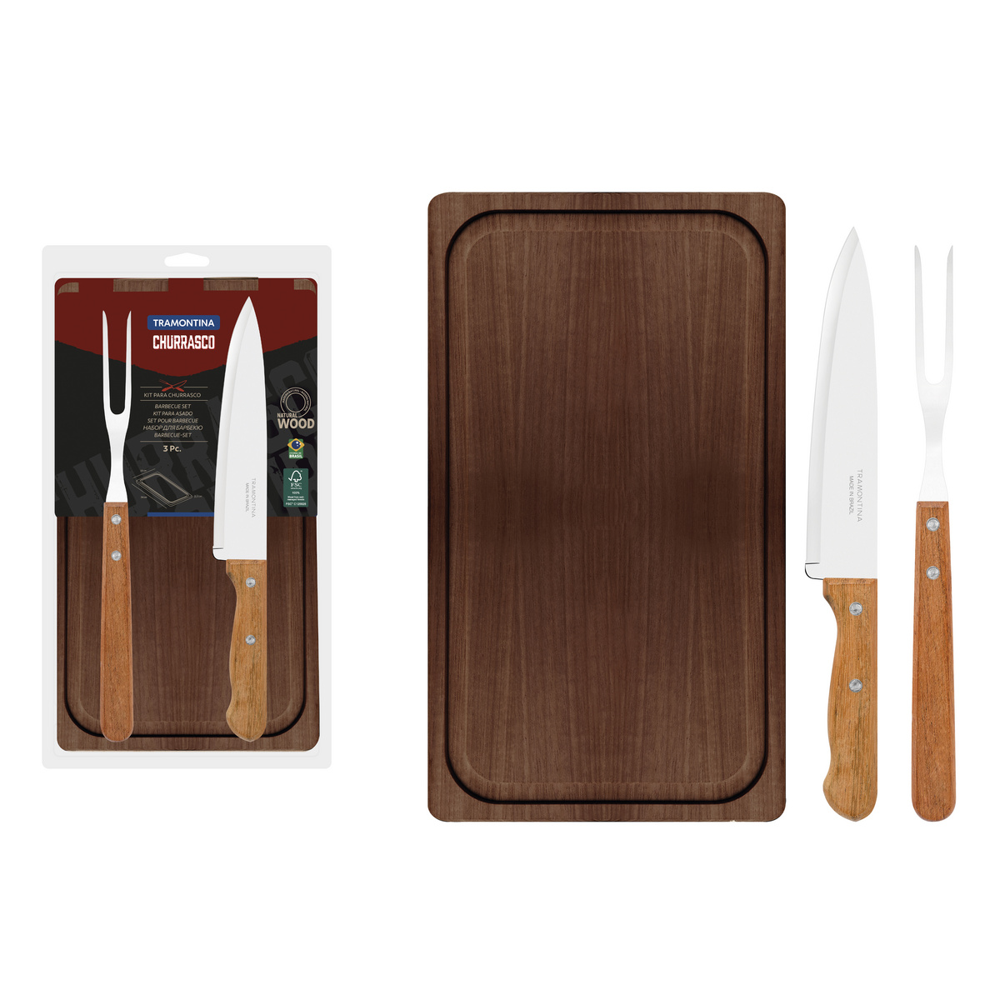
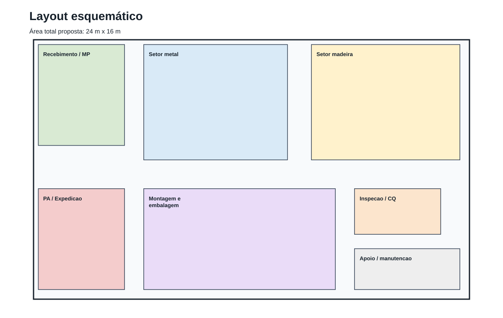
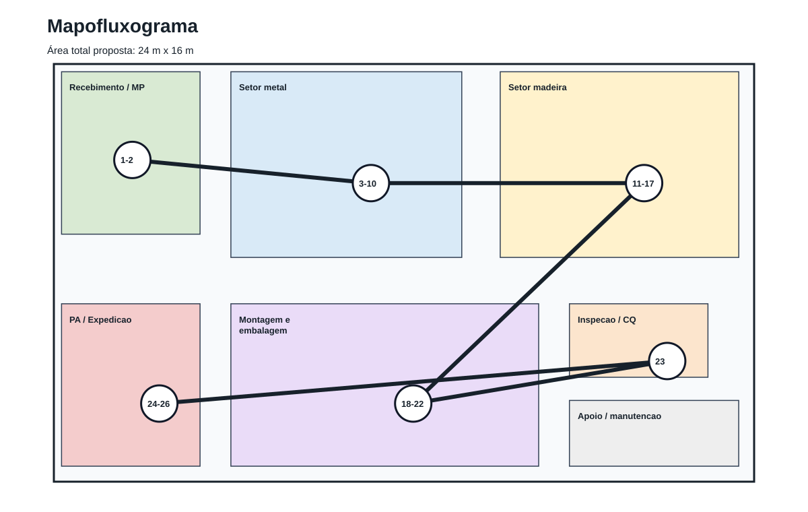
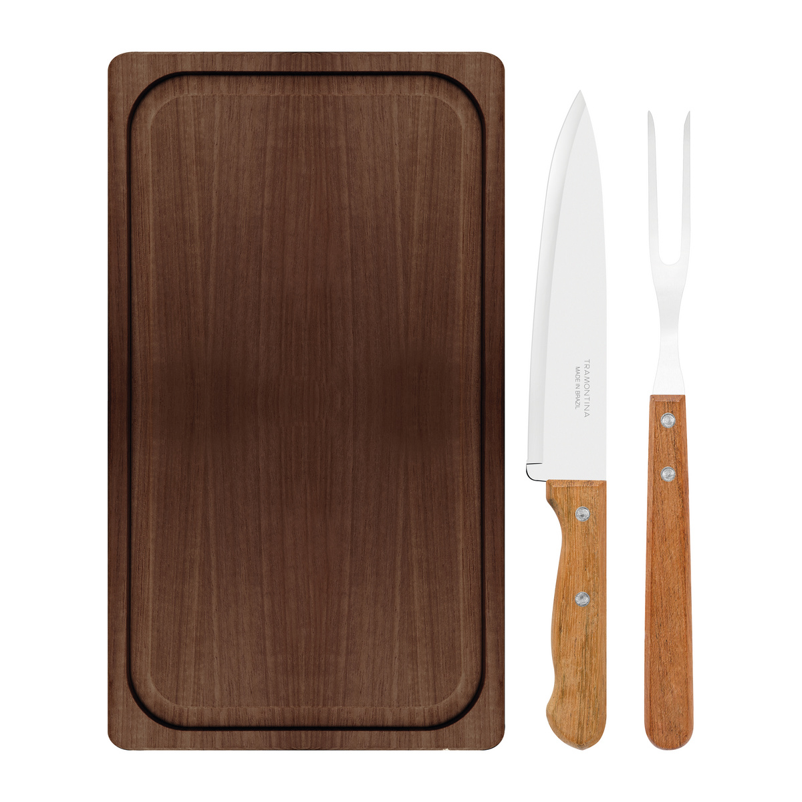
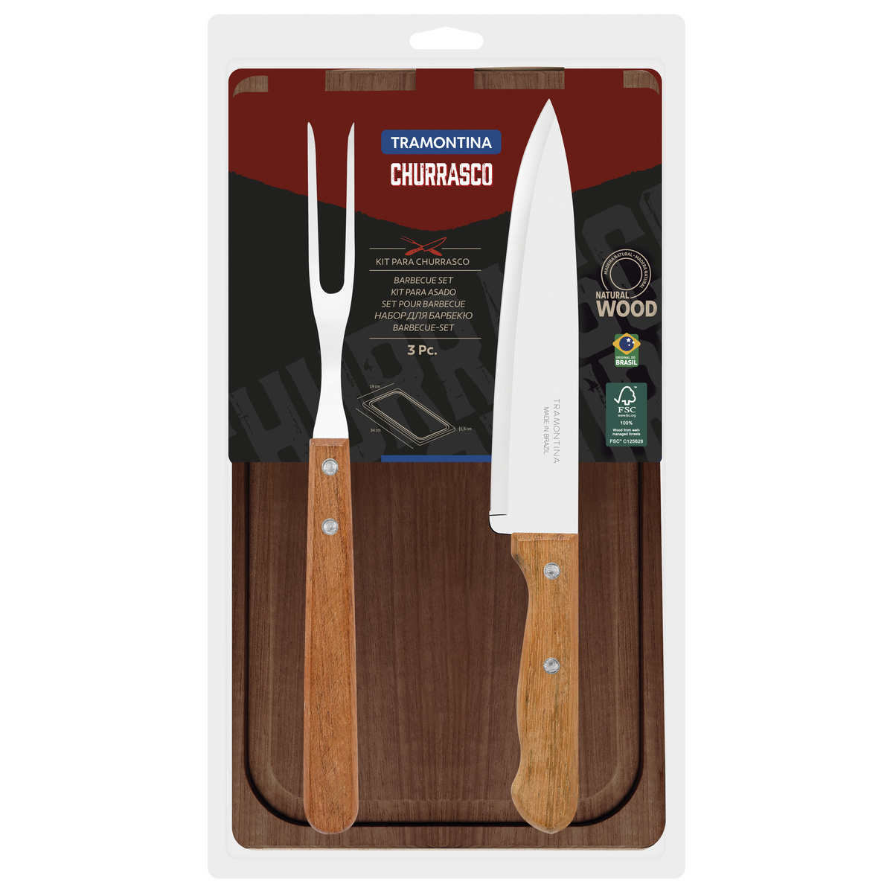
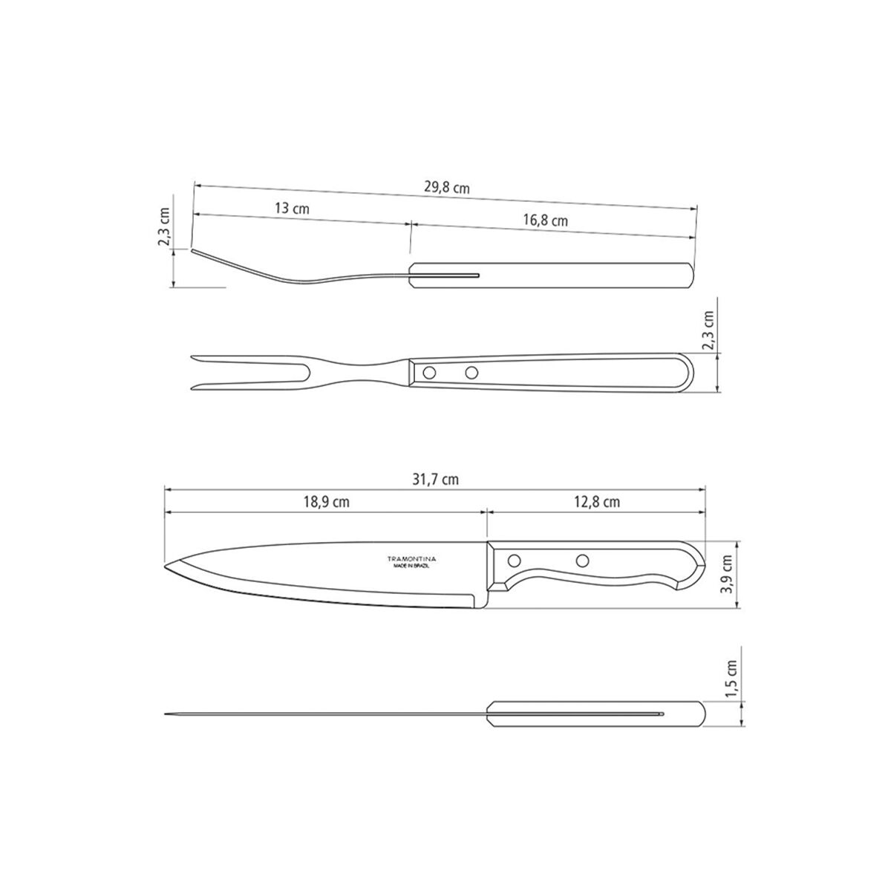
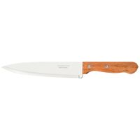
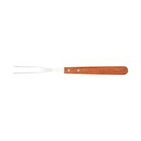
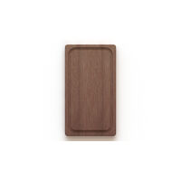

Fluxograma renderizado
Sequência completa dos 26 processos com cores por tipo.
Abrir frente renderizadaKit de 3 pecas para churrasco composto por faca chef 8 polegadas, garfo trinchante e tabua retangular de madeira.
SKU 22399036 · Embalagem 38.9 x 4.0 x 21.6 cm · 1.23 kg.
A captura mostra um integrante como 'You'; falta substituir pelo nome real antes da entrega final.

Sequência completa dos 26 processos com cores por tipo.
Abrir frente renderizada
Arranjo físico com áreas de recebimento, metal, madeira, montagem, inspeção e expedição.
Abrir frente renderizada
Fluxo macro sobre o layout, conectando recebimento, produção, inspeção e expedição.
Abrir frente renderizada
Kit abertoVisão dos itens fora da embalagem, útil para estrutura pai-filho.
Embalagem38.9 x 4.0 x 21.6 cm; 1.23 kg.
Desenho técnicoBase visual para dimensões e desenho técnico no trabalho.
Faca chef 8 pol.Item filho 22315008; lâmina em aço inox, cabo de madeira e rebites.
Garfo trinchanteItem filho 22330000; peça metálica com cabo de madeira.
Tábua retangularItem filho 13102152; madeira Maçaranduba com acabamento natural.Kit de 3 pecas para churrasco composto por faca chef 8 polegadas, garfo trinchante e tabua retangular de madeira.
Materiais: Laminas de aco inox; Cabos de madeira natural; Rebites de aluminio; Tabua de madeira Macaranduba com acabamento natural; Certificacao FSC C125626 informada na pagina/embalagem
7 itens, separando fazer/comprar para uma unidade embalada para envio.
26 processos classificados em operação, transporte, inspeção, armazenagem e espera.
11 recursos principais dimensionados com eficiência, confiabilidade e rendimento.
Maksiwa Store RTC.1313: 2 unidade(s) para atender a demanda.
Área proposta de 384 m², com ocupação estimada de 67.8%.
| Componente | Qtd. | Un. | F/C |
|---|---|---|---|
| Faca chef 8 pol. com lamina em aco inox, cabo de madeira natural e rebites de aluminio | 1 | unidade | Fazer |
| Garfo trinchante com lamina em aco inox, cabo de madeira natural e rebites de aluminio | 1 | unidade | Fazer |
| Tabua retangular em madeira Macaranduba com acabamento natural | 1 | unidade | Fazer |
| Cartela/cinta impressa da embalagem | 1 | unidade | Comprar |
| Blister/suporte plastico transparente | 1 | unidade | Comprar |
| Etiqueta/codigo de barras/rastreabilidade | 1 | conjunto | Comprar |
| Caixa de transporte para envio | 1 | unidade | Comprar |
| No. | Processo | Tipo | Recursos físicos |
|---|---|---|---|
| 1 | Receber materias-primas e embalagens | Inspeção | doca, paleteira, balanca, bancada de conferencia |
| 2 | Armazenar aco inox, madeira, rebites e embalagens | Armazenagem | porta-paletes, estantes, area seca para madeira |
| 3 | Transportar aco inox para corte | Transporte | carrinho/plataforma |
| 4 | Cortar blanks da faca e do garfo em chapa de aco inox | Operação | corte laser fibra CNC |
| 5 | Inspecionar blanks metalicos | Inspeção | paquimetro, gabarito, bancada |
| 6 | Realizar tratamento termico das pecas metalicas | Operação | forno de tratamento termico com carro |
| 7 | Aguardar resfriamento/estabilizacao das pecas | Espera | rack metalico resistente a temperatura |
| 8 | Rebarbar, lixar e polir faca e garfo | Operação | lixadeira/politriz de metal, exaustao, EPIs |
| 9 | Afiar faca | Operação | afiador de facas, refrigeracao, gabarito de angulo |
| 10 | Armazenar pecas metalicas semiacabadas | Armazenagem | racks identificados |
| 11 | Transportar madeira para corte | Transporte | carrinho para tabuas e sarrafos |
| 12 | Cortar tabuas e blanks dos cabos | Operação | esquadrejadeira, coletor de po |
| 13 | Fresar sulco da tabua e usinar/furar cabos | Operação | router CNC, fresas, presilhas |
| 14 | Lixar tabua e cabos | Operação | lixadeira de madeira, bancadas, exaustao |
| 15 | Aplicar acabamento superficial na madeira | Operação | bancada de acabamento, exaustao, suportes |
| 16 | Aguardar cura/secagem do acabamento | Espera | estante de cura e area ventilada |
| 17 | Inspecionar pecas de madeira | Inspeção | gabaritos, inspeção visual, paquimetro |
| 18 | Transportar pecas para montagem | Transporte | carrinhos e caixas plasticas |
| 19 | Montar cabos na faca e no garfo por rebitagem | Operação | rebitadeira pneumatica, gabaritos, compressor |
| 20 | Inspecionar montagem, fio e acabamento | Inspeção | bancada, gabarito, check-list de qualidade |
| 21 | Montar kit na cartela/blister | Operação | bancada de montagem, berco de posicionamento |
| 22 | Selar blister/cartela | Operação | seladora blister tipo carrossel |
| 23 | Inspecionar kit embalado | Inspeção | bancada, check-list visual, amostragem dimensional |
| 24 | Embalar para envio em caixa de transporte | Operação | bancada de embalagem, etiquetadora, fita |
| 25 | Armazenar produto acabado | Armazenagem | porta-paletes, enderecamento, FIFO |
| 26 | Transportar para expedicao | Transporte | paleteira, doca de expedicao |
| Tipo | Fornecedor | Taxa nom. kit/h | Capacidade sem./máq. | Qtd. | Utilização |
|---|---|---|---|---|---|
| Corte laser fibra CNC | Madetech | 80 | 2146 | 1 | 49% |
| Forno de tratamento termico | Cecomatec | 150 | 4023 | 1 | 26% |
| Lixadeira/politriz de cinta para metal | Fornecedor a definir | 40 | 1073 | 1 | 98% |
| Afiador de facas | Maksiwa | 120 | 3219 | 1 | 33% |
| Esquadrejadeira para madeira | Maksiwa | 80 | 2146 | 1 | 49% |
| Router CNC para madeira | Maksiwa Store | 30 | 805 | 2 | 65% |
| Lixadeira de madeira | Fornecedor a definir | 40 | 1073 | 1 | 98% |
| Bancada de acabamento de madeira | Montagem interna | 60 | 1609 | 1 | 65% |
| Rebitadeira pneumatica | Rebitex | 40 | 1073 | 1 | 98% |
| Bancada de montagem e inspecao | Montagem interna | 60 | 1609 | 1 | 65% |
| Seladora blister tipo carrossel | Flockcolor | 240 | 6437 | 1 | 16% |
Maksiwa Store RTC.1313: A tabua e os cabos exigem usinagem/fresagem com repetibilidade; a etapa tem tempo padrao estimado alto e tende a ser gargalo.
qtd = teto(demanda_bruta / (taxa_nominal * horas_úteis * eficiência * confiabilidade * rendimento))
2 unidade(s), com utilização estimada de 65.4%.
| Item | Valor | Conta |
|---|---|---|
| Demanda bruta | 1053 kits/semana | ceil(1000 / 0.95) |
| Horas úteis | 35.0 h/semana | 5 dias * 1 turno * 7 h |
| Taxa nominal | 30.00 kits/h | 3600 / 120 s |
| Taxa efetiva | 22.99 kits/h | nominal * eficiência * confiabilidade * rendimento |
| Capacidade semanal por máquina | 804.68 kits/semana | taxa efetiva * horas úteis |
| Quantidade necessária | 2 unidade(s) | ceil(demanda bruta / capacidade por máquina) |
| Utilização estimada | 65.4% | demanda / (quantidade * capacidade) |
Entradas: data/projeto.json
Código de cálculo: scripts/generate_outputs.py
Resultados: data/resultados_calculo.json e 02_calculos/demonstrativo_calculos.xlsx
| Material | Consumo por kit | Consumo semanal | Base |
|---|---|---|---|
| Aco inox faca | 146.5 g/kit | 154.2 kg/sem. | Desenho tecnico Tramontina 22399036 |
| Aco inox garfo | 77.6 g/kit | 81.7 kg/sem. | Desenho tecnico Tramontina 22399036 |
| Madeira tabua Macaranduba | 1128.7 g/kit | 1188.5 kg/sem. | Pagina oficial Tramontina - produto 22399036 |
| Madeira cabos | 36.9 g/kit | 38.8 kg/sem. | premissa de engenharia |
| Aluminio rebites | 5.0 g/kit | 5.3 kg/sem. | premissa de engenharia |
| ID | Tema | Dado / uso | Confiança |
|---|---|---|---|
| tramontina_product | Produto | Kit 3 pecas ref. 22399036 | alta |
| tramontina_product | Embalagem | Dimensoes com embalagem | alta |
| tramontina_product | Embalagem | Peso com embalagem | alta |
| aperam_420d | Material | Aco inox 420D endurecivel por tratamento termico e aplicavel a laminas de facas | media |
| rolmetais_aisi420 | Material | Densidade AISI 420 | media |
| madeira_macaranduba_remade | Material | Densidade aparente Macaranduba | media |
| madetech_laser | Equipamento | CNC laser fiber mesa 3000x1500, velocidade 20000 mm/min | media |
| cecomatec_furnace | Equipamento | Forno tratamento termico com camara 800x1400x900 e 1200 C | alta |
| maksiwa_router | Equipamento | Router CNC area util 1300x1300x200 e velocidade maxima 30 m/min | alta |
| rebitex_rebitadeira | Equipamento | Rebitadeira 60 ciclos/min, capacidade ate 4 toneladas | alta |
| flockcolor_blister | Equipamento | Seladora blister 4 prensadas/min | alta |
| aula_arranjo | Metodo | Fluxograma mostra sequencia; mapofluxograma mostra sequencia sobre layout | alta |
{kind=link}
{kind=link}
{kind=link}
{kind=link}
{kind=link}
{kind=link}
{kind=link}
{kind=link}
{kind=link}